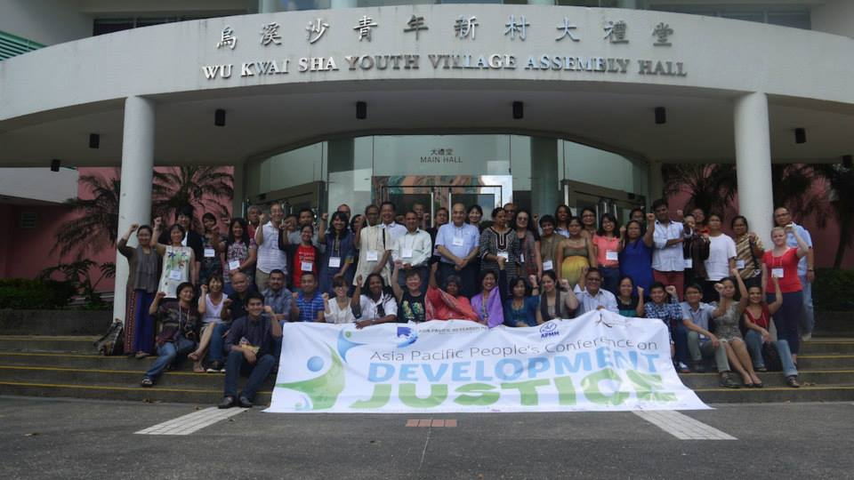
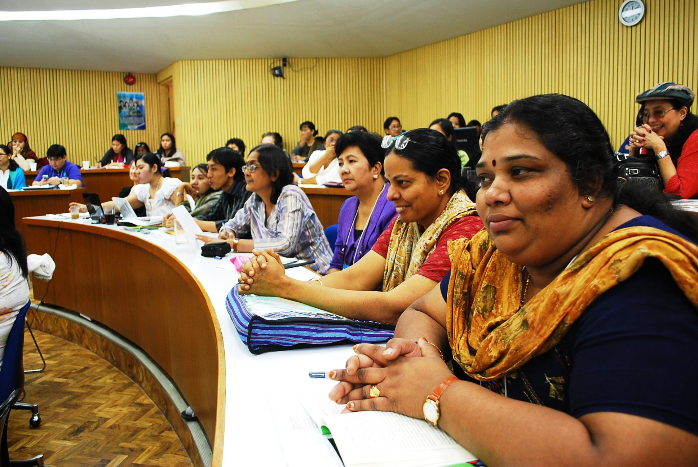

Asia Pacific Research Network
The Asia Pacific Research Network (APRN) was established to develop cooperation among alternative research centres of non-government organizations (NGOs) and social movements that work on current development issues affecting the people across the region. Among its primary concerns is to raise capacity in advocacy and education, particularly in the conduct of research and knowledge-sharing activities.
Establishment
It was established through a process that started in a conference in Canada in 1997, and culminated in its first research conference in Manila in 1999 on the WTO and the impact of trade liberalization on Asian countries. APRN’s strength and prestige as a regional research network is largely due to its being rooted in the social movements while adhering to the standards set for a scholarly undertaking. From an original 21 members, APRN is now 52 member-strong, with a growing number of applicants from national and regional NGOs and NGO coalitions from the Pacific to the Middle East.
Network
APRN’s former campaigns have led to the formation of independent regional and global networks, particularly on development and finance (Reality of Aid/RoA – Asia Pacific), agriculture and rural development (People’s Coalition on Food Sovereignty /PCFS), water (Water for the People Network /WPN) and on climate change (Peoples’ Movement on Climate Change /PMCC). APRN also participates in other global or regional networks such as the Our World is Not for Sale (OWINFS) and Resist! – A global campaign against neoliberal globalization and war.
Members
Advocacy and Research Circles Borneo (Link-AR Borneo)| Aidwatch | Arab NGO Network for Development (ANND) | Asia Monitor Resource Center (AMRC) | Asia Pacific Forum on Women, Law and Development (APWLD) | Asia Pacific Mission for Migrants (APMM) | Australian Fair Trade and Investment Network (AFTINET) | Balochistan Rural Development and Research Society (BRDRS) | Center for Development Programs in the Cordilleras (CDPC) | Center for Environmental Concerns (CEC) | Center for Sustainable Community Development (S-CODE) | Center for Sustainable Research Development (SRD) | Center for Women’s Resources (CWR) | Centre for Community Economics and Development Consultants (CECOEDECON) | Centre for Human Rights and Development (CHRD) | Coastal Development Partnership (CDP) | Center for Participatory Research and Development-CPRD China Association for NGO Cooperation (CANGO) | Consumer Association of Penang (CAP) | Consumer International (CI) |